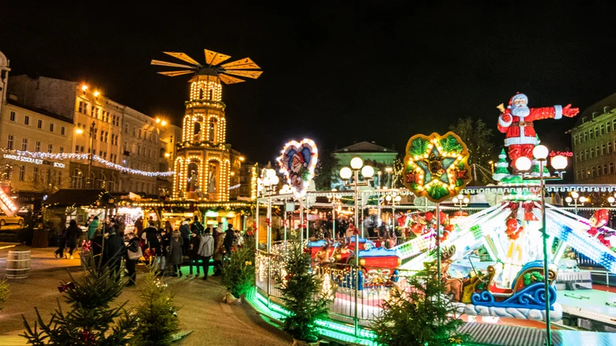
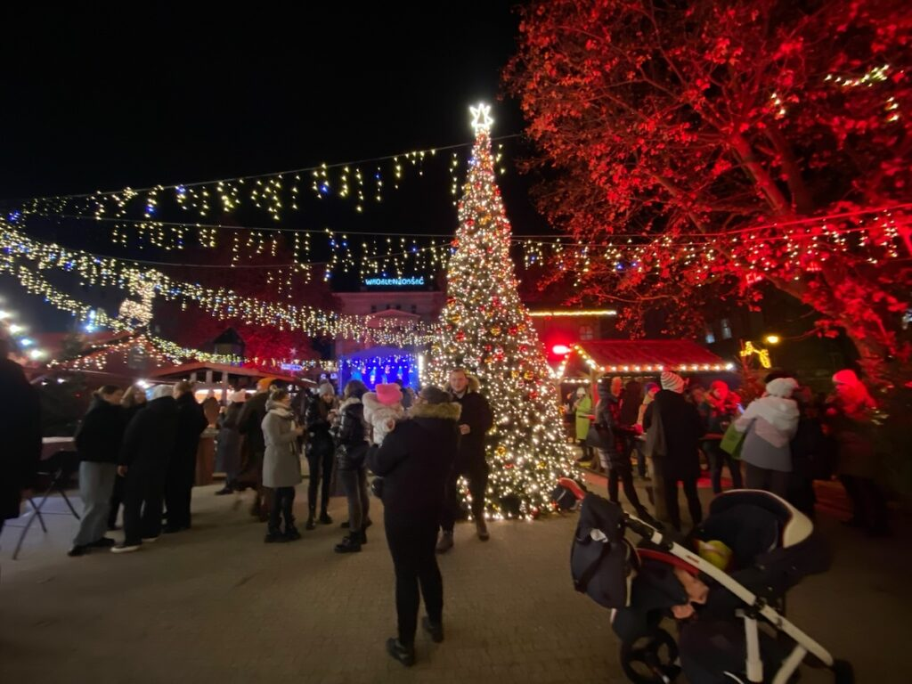
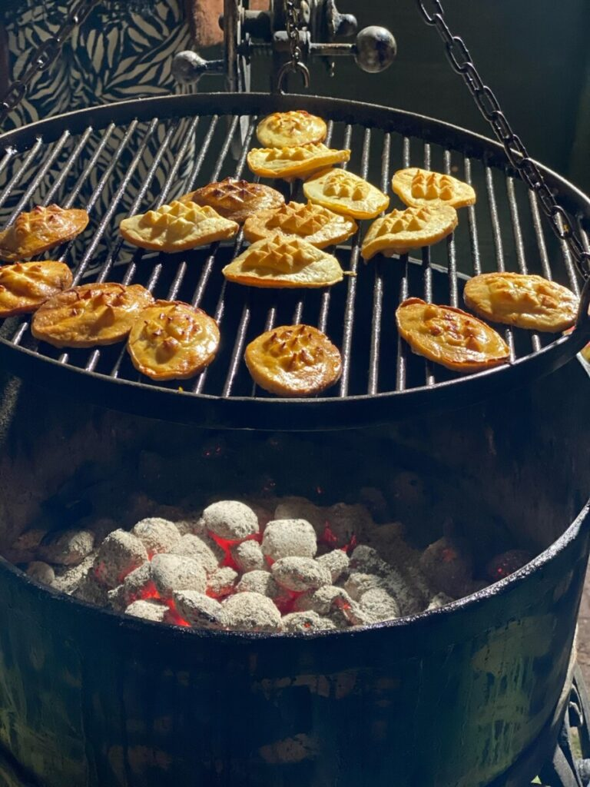
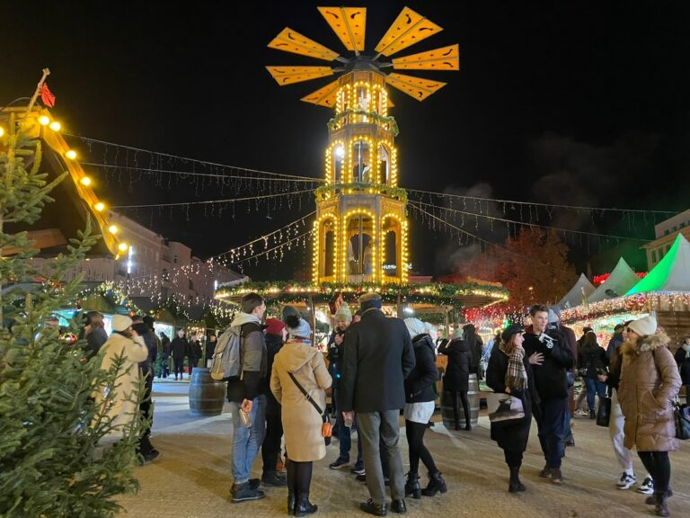
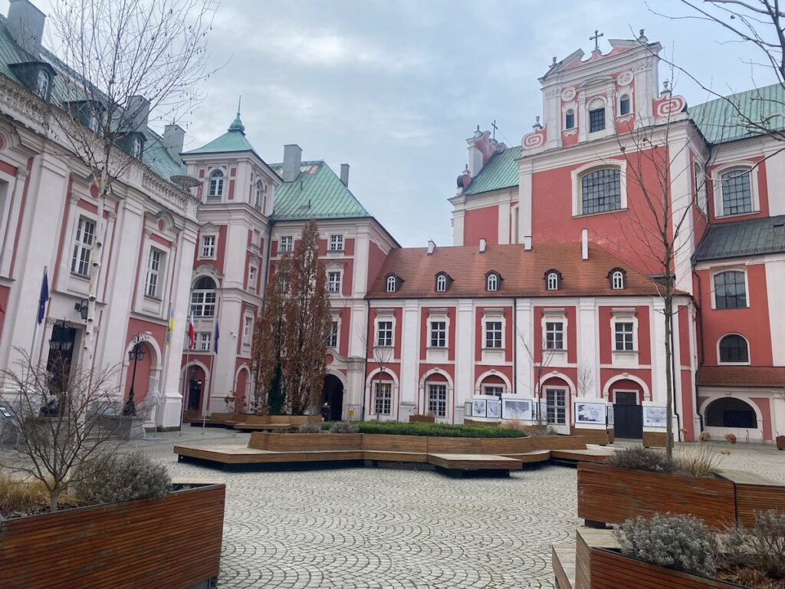

Poland: Poznan

Freedom Square and the Renaissance-style Old Market Square in Poznan both have off-the-beaten-path Christmas markets as well as an arts and crafts fair, making it near impossible to leave without acquiring a beautiful handmade memento. Old Market Square also hosts the International Ice Sculpture Festival in early December, during which competitors from around the world create jaw-dropping frozen creations. Imagine sipping a perfectly spiced mulled wine while gazing at a giant illuminated Ferris Wheel in the night sky. This is the Poznan Christmas market.
Two Markets, One Clear Winner
In Poznan we actually visited two Christmas markets. The main market at Plac Wolności and the market at the International Fair, just by the central train station. The market at the International Fair I’d skip. Though there were lots of shopping stalls, an ice skating rink, ferris wheel and some food vendors, the market lacked authenticity and character. The market at Plac Wolności had much more of the Christmas magic I was hoping for. Whilst small, there is plenty to keep you occupied for an evening in Poznan. If you are passing through Poznan during Christmas time, make a stop.

When and Where are the Poznan Christmas Markets
Usually the Poznan Christmas market takes place at the central Market square. It’s unfortunate that the square has been undergoing renovations for the last few years. In 2023, they hosted the market at the nearby Plac Wolności. It’s definitely not as beautiful or big as the market usually is. For up to date information for this year’s Christmas market check the official website. Note, I found it difficult to find information on the Poznan Christmas market in the old town square. Try searching for Poznan Bethlehem. For information on the market at the International Fair, it was easy.
Tip: If you are visiting the market at the international fair when you arrive or depart Poznan by train or bus, you can easily store your luggage in one of the lockers at the station for an hour or two.
Poznan’s Christmas Flavors
The food options in Poznan were much more limited than we were used to in Dresden and Wroclaw. The flavors also tended to be less exciting. Here are a few dishes we did enjoy though.
Bigos (Hunter’s Stew): A hearty mix of sauerkraut, cabbage, and various meats – perfect for icey evenings
Oscypek: Smoked mountain cheese wrapped in bacon (a Polish Christmas market staple, I wrote all about it in my Wroclaw Christmas market post)
Goulash: Warm up with this rich, meaty stew
Mulled wine: Of all the mulled wine we tasted, the Poznan Christmas market had the best. Not too sweet or heavily spiced.
Pierogis: This time it was hard to find them steamed, they were often fried and heavy

Got a sweet tooth? Don’t miss the famous St. Martin’s croissant, a Poznan specialty filled with white poppy seeds. Legend has it that in the late 19th century, a local baker wanted to be charitable to the poor. He created a croissant to gift to those in need. He’d recently watched a horse lose its shoe, so the baker shaped the croissant like a horseshoe. There’s also a croissant museum if you want to learn more and taste the best one in town. Check in advance for English tour times.
Activities and Attractions at the Market
In Plac Wolności there is a giant ferris wheel with great views overlooking the city as well as smaller rides, a Venetian carousel and carnival games. The night we were there there was a talent show as well as a silent disco. Like I said, plenty of activities for one evening. \

Beyond the Christmas Market: Poznan’s Must-See Sights
In addition to the market, be sure to take a stroll through the rest of the old town and visit the old market square. The market square features brightly colored and well preserved 16th century merchant houses. In the center is the Renaissance Town Hall. I was convinced this was a church sheerly based on its grandeur. Every day at noon mechanical Billy goats emerge from the clock tower and butt heads for about five minutes. Slightly odd, but worth a watch. You’ll find it easily, just look for tourists looking up.

Last tip for Poznan. Take a walk over to the bright pink building called the Basilica of our Lady of Perpetual Help. The 16th century Catholic church continues its stunning rose color inside. Take a gander if you have the time. They also have weekly organ concerts.

Is the Poznan Christmas Market worth visiting?
Absolutely! While smaller than some of the more famous Christmas markets, Poznan’s Christmas market offers a perfect blend of Polish tradition and merriment. It’s an ideal stop for those looking for a more intimate and local Christmas market experience.